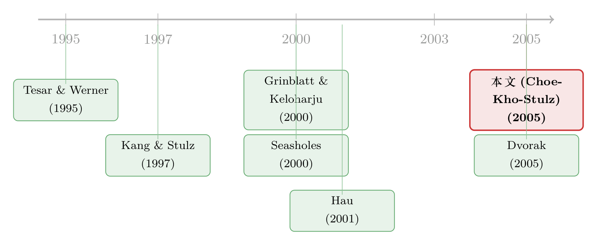

外资真有「信息劣势」吗？——首尔交易簿里那 37 个基点的真相
本文读的是 Choe, Kho & Stulz (2005, Review of Financial Studies)：用 1996–1998 年韩国交易所的全样本逐笔成交数据，作者发现外国基金经理买股票时买得更贵、卖股票时卖得更便宜，中大额交易上按成交额加权的劣势约为买入 21 个基点、卖出 16 个基点（一次往返多付约 37 个基点）。但真正的反转在于「为什么」：不是因为外资更急、也不是因为本地人更懂行，而是在外资动手之前，价格就已经朝着对他们不利的方向走掉了——而这一部分，又能被外资的「追涨杀跌」解释掉。
1 一个被默认了很久的常识
先讲一个几乎所有人都信、却很少有人量过的「常识」。
很长一段时间里，金融经济学家、学界和业界的共识都是：在一国的股票市场上，本国投资者相对外国投资者是有优势的。最流行的解释是信息——本地人离公司更近、离政策更近、离传闻更近，所以更懂这只股票。当然也有别的说法，比如监管者对本国人更宽容、甚至对外资有偏见。这套「本地人有优势」的叙事被用来解释一大堆经验规律：本土偏好 (home bias)、资本流动的高波动、以及外资的羊群行为 (herding)。
听上去顺理成章。可问题是，怎么验证？ 你不能直接打开一个投资者的脑子看他知道什么。过去的做法，几乎清一色是去比「业绩」：外资买的股票后来涨得多不多、跌的时候躲没躲开。Grinblatt 和 Keloharju (2000) 用芬兰数据、Seasholes (2000) 用台湾数据、Froot、O'Connell 和 Seasholes (2001) 用跨境资金流数据，反而给出了一个相反的故事：外资机构因为有更好的人才、更多的专有研究，业绩更好、更聪明。（关于「外资是不是高人一等」的更长期争论，可参见《外资真是「蝗虫」吗？——一次跨 30 国的长期投资体检》。）
于是常识被劈成了两半：到底是本地人有信息优势，还是外资更老练？
接着，一个自然的问题是——业绩这把尺子，本身可靠吗？ 任何「谁的投资回报更高」的研究，都绕不开一个老大难：你得先有一个资产定价模型来控制风险，结论才能成立。换个模型、换组参数，谁赢谁输可能就翻盘了。文献里之所以吵不出结果，很大程度上正是因为大家用的「风险的尺子」不一样。
这篇论文最聪明的一步，恰恰是绕开这把尺子。
2 识别策略：把比较压进同一个交易日
作者的想法朴素得近乎狡猾：不比业绩，比成交价格。
如果你想知道外资是不是「吃亏」，何必去看他持有三个月、一年后的回报？只要在同一个日历日之内，比较外资和本地人买同一类股票时各自付了多少钱、卖时各自收了多少钱就够了。在一天之内做比较，资产定价模型里那些「被定价的风险」根本来不及发挥作用——隔夜风险、贝塔、规模、价值，这些东西在日内尺度上可以忽略。于是结论不依赖于你选哪个模型、调哪组参数。这是整篇文章方法论上的命门。
具体怎么做？作者手里的数据是韩国交易所 (Korea Stock Exchange, KSE) 从 1996 年 12 月 2 日到 1998 年 11 月 30 日的全部成交记录，每一笔都带着到达交易所和被撮合的时间戳，并标注了交易者的居民国别、是个人还是机构、机构又是哪一类。这份数据由首尔国立大学金融与银行研究所编制。样本里共有 586 个交易日。
一个干净的制度细节：KSE 的开盘价、收盘价由集合竞价 (batch auction) 决定，而集合竞价对所有人是同一个价。换句话说，外资在集合竞价里不可能吃亏——所以任何价格上的劣势，只可能发生在连续竞价 (continuous auction) 的时段。这等于先天就把「制度性歧视」这个嫌疑排除了一大半。
然后是核心的度量。先对每只股票 \(i\)、每个交易日 \(d\)，用当天所有成交算一个成交量加权平均价（业界叫 vwap）：
$$A_i^d = \frac{\sum_t P_i^{dt}\, V_i^{dt}}{\sum_t V_i^{dt}}$$
其中 \(P_i^{dt}\) 是第 \(t\) 笔成交的价格，\(V_i^{dt}\) 是成交股数。这就是当天这只股票的「平均价」基准。
接着，对每一类投资者 \(j\)，把他们的买单（或卖单）单独拎出来，同样算一个成交量加权平均价：
$$B_{i,j}^d = \frac{\sum_t P_{i,j}^{dt}\, V_{i,j}^{dt}}{\sum_t V_{i,j}^{dt}}$$
最后看比值 \(B_{i,j}^d / A_i^d\)。逻辑一目了然：对于买入，比值大于 1，说明这类投资者买在了当天均价之上；比值越大越吃亏。对于卖出反过来，卖价低于均价、比值小于 1 才是吃亏。
但真正关键的一步在于：作者强调他们关心的不是比值本身，而是两类投资者比值之差。为什么？因为分母 \(A_i^d\) 对两类人是一样的，求差时它的影响被抵消掉了——结论对「用当天均价还是前一日收盘价做分母」这种技术选择不敏感。作者也验证过，换成前一日收盘价做分母，结果不变。
投资者被分成六类：本国（个人 / 基金经理 / 银行）和非居民外资（个人 / 基金经理 / 银行）。交易又按规模切成三档：小额（≤500 万韩元）、中额（≤5000 万韩元）、大额（>5000 万韩元）。这个「按规模切」的设计，后面会成为整个故事的转折点。
3 主要结果：外资确实买贵了、卖便宜了
先看结论，再看意外。
按成交额加权（这是最贴近真实「钱袋子」的口径），外国基金经理相对本国基金经理：
- 买入全部交易，比值之差约为 −0.212%，即买贵了约 21 个基点（\(t = -7.78\)）；
- 卖出全部交易，比值之差约为 +0.163%，即卖便宜了约 16 个基点（\(t = 6.82\)）。
合起来，一次「买进再卖出」的往返，外国基金经理比本国同行多付约 37 个基点的交易成本。这个数字看着不大，可对任何不是长期买入持有的外资来说，它是实打实的业绩拖累。作者算了一笔账：一个一年换手三次的投资者，每年要被拖掉超过 100 个基点。作为参照，Carhart (1997) 报告，1962–1993 年美国分散化共同基金里，业绩最好和最差的十分位之间，月度 Jensen's alpha 之差也才 0.67%。也就是说，单是这一道「往返成本」，就足以把一个基金经理从前列拖到后排。
接着，一个自然的问题是——这是不是「外资」造成的，还是「机构」造成的？ 毕竟外资几乎全是机构。作者很谨慎，全程都同时拿本国机构和本国个人做对照。结果是：外资基金经理相对本国个人也吃亏，按成交额加权，卖出全部交易的比值之差高达 +0.331%（\(t = 18.38\)）——也就是说，本国散户在卖出时反而占了外资的便宜，而且这个证据在卖出端比买入端更强。这就排除了「无非是机构 vs 个人」的解释：外资的劣势是因为外，不是因为是机构。
但最有意思的细节藏在「按规模切」里。小额交易，外资几乎没有劣势，甚至略占便宜（小额买入比值之差约 0.004%，\(t = 0.09\)，统计上就是个零）。劣势完全集中在中额和大额交易上。换句话说，外资买一手两手没事，一旦下大单，价格就开始跟他作对。
注意这里的「条件性」。作者把样本限定在外资当天确实交易了的股票-日。所以他们估的是「既然外资下了单，他吃了多少亏」，而不是外资无条件的劣势。那些劣势大到外资干脆不来交易的股票和日子，被排除在外了——真实的、无条件的劣势只会比 37 个基点更大。
4 真正的反转：不是更急，也不是更蠢，而是「来晚了」
到这里，事实清楚了：外资在中大单上系统性地买贵卖贱。可这只是现象。为什么？ 这才是论文的灵魂，也是它和所有「比业绩」文献拉开身位的地方。
作者摆出三个互不排斥的假说：
- 外资更没耐心 / 在流动性更差时交易，所以要付更多钱给流动性提供者——这会表现为更大的暂时性冲击 (temporary impact)，事后价格会反弹回去；
- 外资信息更灵，他们的交易有更大的永久性冲击 (permanent impact)，价格被推上去后不回头；
- 外资在价格已经朝不利方向走完之后才动手——也就是说，亏在了「进场时机」，而不是「进场动作」。
怎么分辨？作者去看外资密集交易 (intensive trading) 前、中、后的股票收益。
第一个假说被否了：外资密集交易带来的暂时性冲击，并不比本国机构更大。所以外资并没有「更急、更不挑时候」。
第二个假说也被否了：用常规的永久性冲击度量，看不出外资比本国机构信息更灵。说外资是「聪明钱」、有信息优势？这份数据不支持。
于是，剩下的只能是第三个。而它确实成立：外资和本国投资者最关键的区别，是在他们即将密集交易之前，价格已经朝着对外资更不利的方向移动了。 他们买之前价格先涨了，卖之前价格先跌了。等他们动手，便宜早被人占完。
那这个「来晚了」又从哪来？作者给出了一部分答案：外资的追涨杀跌 (return-chasing) 行为——他们倾向于在价格已经涨上去之后才追着买、在跌下来之后才跟着卖。换句话说，外资吃的不是「信息劣势」的亏，而是「反应慢半拍、还偏要顺势追」的亏。（关于投资者在涨势里更想交易这件事本身，可参见《股票涨了，他们为什么更想交易？——46 国市场里的一条「追涨」暗线》。）
这是一个相当反直觉、也相当克制的结论。它没有去坐实「本地人信息更强」这种宏大叙事，而是把外资的劣势拆解成了一个微观的、几乎是行为层面的机制：进场时机差。
5 文献脉络
把这篇论文放回它生长的那条线上看，会更清楚它的位置。
最早的一脉，是关于本土偏好与跨境投资行为的事实积累。Tesar 和 Werner (1995) 记录了发达市场里外资换手率畸高的现象；Kang 和 Stulz (1997) 用日本 18 年的年度数据，没找到外资跑赢本地的证据；Shukla 和 van Inwegen (1995) 则发现英国基金经理选美股时跑输美国本土经理。这一拨研究，倾向于「本地人有优势」的老共识。

然后，世纪之交出现了一股「外资其实更聪明」的逆流。Grinblatt 和 Keloharju (2000) 用芬兰独特的全样本数据、Seasholes (2000) 用台湾数据，都论证外资因为资源更好而表现更佳；Froot、O'Connell 和 Seasholes (2001)、以及 Froot 和 Ramadorai (2001) 用资金流数据显示外资「抢在」更好的回报之前进场。Hau (2001) 则用专业投资者的交易数据，得出本地交易者业绩更好的结论——但他看的是一段时间内的盈亏，而非「买卖时点的价格是否占优」。Coval 和 Moskowitz (2001) 从另一个角度证明「位置很重要」：基金经理更擅长挑离自己近的公司。
但真正关键的一步在于：上面所有这些研究，都困在「比业绩、控风险」的泥潭里——结论对资产定价模型敏感，所以文献始终没能收敛。本文 (Choe, Kho & Stulz, 2005) 的贡献，是换了一个几乎不依赖模型的问法：同一天里，谁买得贵、谁卖得贱？作者自己也指出，这大概是第一篇在任何国家直接比较本国和外国投资者成交价格的文章。有意思的是，Dvorak (2005) 随即把这套方法搬到印度尼西亚，同样发现外资处于劣势——方法的可复制性，本身就是一种背书。（这条「外资在全球市场是否有主场劣势」的线，也可对照《在全球市场里，「老乡」基金经理算不算一种主场优势？》。）
6 评论与延伸（Q&A + 研究方向）
(a) 几个可能的疑问
Q：为什么说「比成交价」就比「比业绩」更干净？不也得有个基准吗？
基准是有的——当天的成交量加权均价 \(A_i^d\)。但关键在于作者比的是两类人比值之差，分母对双方一样，求差时抵消。所以结论不依赖资产定价模型，也对「用均价还是前收盘价做分母」不敏感。比业绩则不行：你必须先用某个模型把风险扣掉，换个模型结论就可能翻盘。
Q：21 个基点听起来很小，至于吗？
单看一次交易确实小。但它是往返 37 个基点的单边，而且会随换手放大：一年换手三次就被拖掉 100+ 个基点。对照 Carhart (1997) 里美国基金最好与最差十分位的月度 alpha 之差也才 0.67%，这道成本足以把一个基金经理从前排挤到后排。它咬的是交易型外资，不咬长期买入持有者。
Q：会不会只是「机构 vs 个人」的差别，跟「外不外」无关？
作者特意防了这一手：外资基金经理相对本国个人也吃亏，卖出端比值之差高达 0.331%（\(t=18.38\)）。如果纯是机构特征，本国散户不该占外资便宜。所以劣势是「因为外」，不是「因为是机构」。
Q：既然外资买贵卖贱，是不是说明本地人真的信息更强？
恰恰相反，这是本文最克制的地方。作者用永久性冲击度量去找外资的「信息劣势」，没找到；用暂时性冲击去找外资「更没耐心」，也没找到。剩下的机制是「进场时机差」——外资在价格已经朝不利方向走完后才动手，且部分源于追涨杀跌。这不是信息差，是反应速度和行为偏差。
Q：样本只有 1996–1998，正好撞上亚洲金融危机，结论可信吗？
这是真实的隐忧。样本期内韩国市场剧烈动荡、外资持股上限一路从 20% 放开到 100%，制度本身在变。作者在回归里控制了市场状况，也指出危机高点外资虽在卖却没卖到使持股低于 1996 年底的水平。但「危机期的追涨杀跌」是否能外推到平静期，数据本身回答不了。
Q：会不会有「假外资」——本地人借外资壳交易——污染了识别？
作者诚实地承认了这个局限：国别是按外资登记 ID 认定的，理论上存在韩国人设立外资名义公司在 KSE 交易的可能。若真有，这类「假外资」行为更像本地人，只会稀释而非夸大外资劣势——所以真实劣势可能比估计的更大，这一点反而让结论更稳。
(b) 几个可能的研究问题与提案
1. 把这套「成交价之差」搬到公司债市场
【经济故事】公司债是 OTC、做市商主导、透明度远低于股票的市场，外资在这里的「进场时机劣势」和议价劣势可能被成倍放大。如果连流动性最好的股票里外资都吃 37 个基点，信用债里会是多少？ 【可行性】中。TRACE 提供逐笔成交，但缺乏交易者国别标签；需要配合监管层的持有人数据（如保险公司 NAIC、或某国央行的持债明细）才能识别外资。识别上可借用本文「同一债券、同一窗口内不同投资者成交价之差」的思路，但债券一天可能就成交几笔，要处理稀疏性。
2. 区分「追涨杀跌」与「被动再平衡」
【经济故事】本文把外资劣势部分归给 return-chasing，但「危机期跟风卖」也可能是基金被赎回、被迫减仓的被动行为，而非主动追跌。两者的政策含义完全不同：前者是行为偏差，后者是流动性约束。 【可行性】高（若有资金流数据）。把外资交易拆成「主动调仓」与「赎回驱动」两部分——需要基金层面的申赎流（如 EPFR 或单只基金的份额变动），再看哪一部分对应了不利的进场时点。识别策略清晰，数据是瓶颈。
3. 制度放开作为外资「学习」的自然实验
【经济故事】样本期内韩国外资持股上限从 20% 一路放到 100%。一个自然的问题是：随着外资参与加深、在韩经验积累，那 37 个基点的劣势是收窄了，还是岿然不动？若收窄，说明劣势源于「人生地不熟」可被时间治愈；若不变，则更像结构性的反应速度劣势。 【可行性】中。可用持股上限的几次离散跳升做事件研究，看每次放开后外资价格劣势的演化。难点是上限放开与危机时点高度重叠，要把「学习效应」和「危机效应」分开，识别上不轻松。
4. 谁是外资劣势的「对手盘赢家」？
【经济故事】外资多付的 37 个基点，总得有人赚走。本文已暗示本国散户在卖出端占了外资便宜，但「赢家」究竟是知情的本地散户、还是抢跑的本地做市型机构？把外资大单的对手盘逐笔拆开，能直接回答「钱流向了谁」。 【可行性】中到高。本文数据已含对手方的投资者类型，原则上可按外资大单匹配同窗口对手成交，构造「外资 vs 各类对手」的盈亏分布。主要障碍是数据库不允许追踪个体身份，只能到类型层面。
参考文献
Carhart, M. M. (1997). On Persistence in Mutual Fund Performance. Journal of Finance 52(1), 57–83.
Choe, H., Kho, B.-C., & Stulz, R. M. (1999). Do Foreign Investors Destabilize Stock Markets? The Korean Experience in 1997. Journal of Financial Economics 54(2), 227–264.
Choe, H., Kho, B.-C., & Stulz, R. M. (2005). Do Domestic Investors Have an Edge? The Trading Experience of Foreign Investors in Korea. Review of Financial Studies 18(3), 795–829.
Coval, J. D., & Moskowitz, T. J. (2001). The Geography of Investment: Informed Trading and Asset Prices. Journal of Political Economy 109(4), 811–841.
Dvorak, T. (2005). Do Domestic Investors Have an Informational Advantage? Evidence from Indonesia. Journal of Finance 60(2), 817–839.
Froot, K., O'Connell, P., & Seasholes, M. (2001). The Portfolio Flows of International Investors. Journal of Financial Economics 59(2), 151–193.
Grinblatt, M., & Keloharju, M. (2000). The Investment Behavior and Performance of Various Investor Types: A Study of Finland's Unique Data Set. Journal of Financial Economics 55(1), 43–67.
Hau, H. (2001). Location Matters: An Examination of Trading Profits. Journal of Finance 56(5), 1959–1983.
Kang, J.-K., & Stulz, R. M. (1997). Why is There a Home Bias? An Analysis of Foreign Portfolio Equity Ownership in Japan. Journal of Financial Economics 46(1), 2–28.
Seasholes, M. (2000). Smart Foreign Traders in Emerging Markets. Working Paper, Harvard Business School.
Shukla, R. K., & van Inwegen, G. B. (1995). Do Domestics Perform Better than Foreigners? An Analysis of UK and US Mutual Fund Managers. Journal of Economics and Business 47(3), 241–254.
Tesar, L. L., & Werner, I. M. (1995). Home Bias and High Turnover. Journal of International Money and Finance 14(4), 467–492.
我的判断是这样。这篇文章最大的贡献不在结论，而在问法——它用一个日内的、几乎不依赖模型的价格比较，把困扰文献多年的「外资到底吃不吃亏」从「比业绩、控风险」的泥潭里捞了出来，并且把劣势进一步解剖成一个可证伪的微观机制：不是信息差，而是进场时机差。Dvorak (2005) 在印尼的复制让这套方法更可信。对识别我有两点保留：其一，样本期与亚洲危机及外资上限的连续放开高度重叠，「危机期追涨杀跌」能否外推到平静期，数据无法回答；其二，结论是条件于外资交易的，真实的无条件劣势只会更大，但也意味着我们看不到那些「亏太多就不来」的极端情形。后续我最想看到的，是把这套价格度量搬进公司债和外资持债——在一个更不透明、做市商主导的市场里，那 37 个基点会变成多少，以及它究竟是被「追涨」吃掉的，还是被「赎回逼仓」吃掉的。